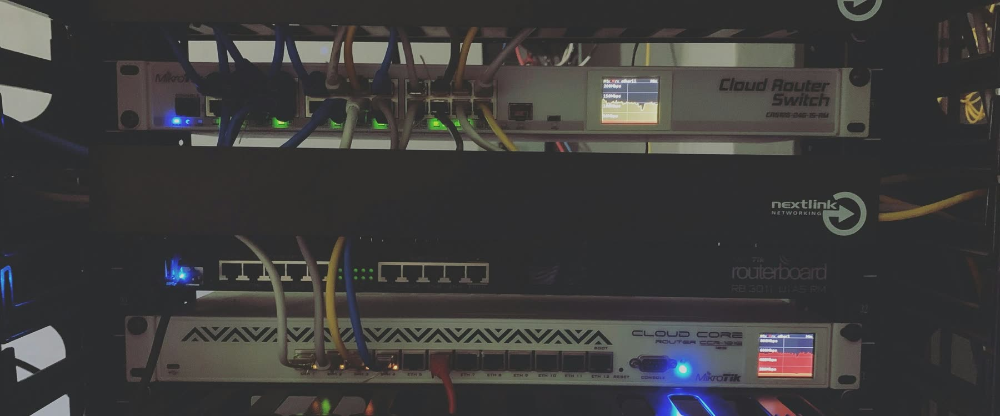

The challenge
Incident response should begin with action.
When an alert fires, the responder may know the hostname, IP address, switch name, or asset tag, but that does not always translate into a clear physical location. They still need to know which rack the device is in, which row to walk to, which port is connected, and whether the CMDB location is correct.
Responders often jump between DCIM, CMDB, monitoring tools, spreadsheets, old diagrams, and messaging threads before they can start real work. That delay increases mean time to locate, mean time to respond, and mean time to recover.
What RackTrack does
A spatial view of the rack environment.
Using visual rack scans, RackTrack helps identify devices, rack positions, visible ports, labels, cables, and current physical placement. A responder can search by device, rack, port, row, asset label, or site context and quickly understand where the issue is located.
RackTrack helps answer the most important first question: where exactly do I need to go? Instead of starting at the asset tag, responders can start at the rack.
Example scenario
Packet loss response without tool-hopping.
A monitoring alert shows packet loss from a critical application server connected through a top-of-rack switch. The on-call engineer needs to confirm switch, port, cable path, and physical rack location.
With RackTrack, the engineer searches the device or switch context, sees the current rack location, identifies the related physical area, and starts the runbook from the correct rack. The result is faster location, fewer detours, and quicker recovery.

RackTrack helps answer the most important first question: where exactly do I need to go?
How RackTrack works
From alert to rack-level clarity.
- CaptureSite teams scan racks during normal operations or after changes.
- DetectDevices, rack positions, labels, ports, and cables are identified.
- SearchResponders search for a device, port, rack, row, or asset label.
- LocateRackTrack shows the physical location and surrounding rack context.
- RespondThe runbook begins from the real rack location, reducing wasted time.
Incident response should not begin with a search party
When every device, port, and rack location is easier to find, responders can act faster and recover faster. RackTrack helps on-call teams move from alert to rack-level clarity in seconds.